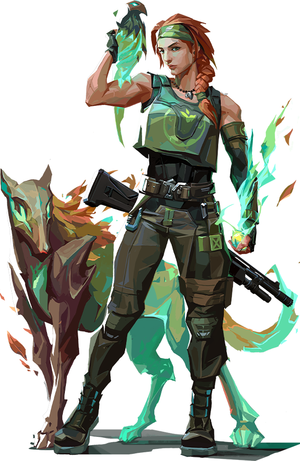

Skye
A Agente adicionada no Ato III de Valorant, Skye é uma personagem predominantemente utilitária com habilidades de suporte voltadas para reconhecimento e controle de áreas. Sua skill de cura é uma das duas únicas formas de curar aliados no time, tornando a personagem muito útil. Seu Ult é uma das melhores habilidades do jogo para invadir bombsites, já que é capaz de localizar até 3 oponentes no local, sem necessidade de se expor.
Habilidades de Skye
Reflorescer ($200)
Enquanto canalizada, cria uma área de efeito que cura todos os aliados dentro do raio de alcance. Pode ser interrompida e reutilizada novamente. Só pode ser comprado 1 vez por round.
Predador Explosivo ($200)
Invoca e assume o controle de um lobo-da-tasmânia. O jogador pode mover o animal livremente para explorar áreas. Ao encontrar inimigos, é possível desferir um ataque que causa atordoamento em área. O lobo pode ser destruído por qualquer fonte de dano. Só pode ser comprado 1 vez por round.
Luz Desbravadora (1200)
Invoca um falcão parcialmente controlável (como as smokes de Jett). Ao ser ativado, o falcão explode causando cegueira em todos os jogadores que estiverem olhando. Assim como o lobo, também pode ser destruído por qualquer fonte de dano. Pode ser comprada até 3 vezes por round.
Rastreadores (6 Pontos de Ultimate)
Invoca bolas de energia que rastreiam inimigos e, ao encontrar em contato, causam visão turva idêntica a da habilidade Paranoia de Omen.